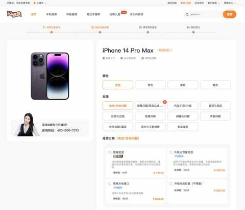
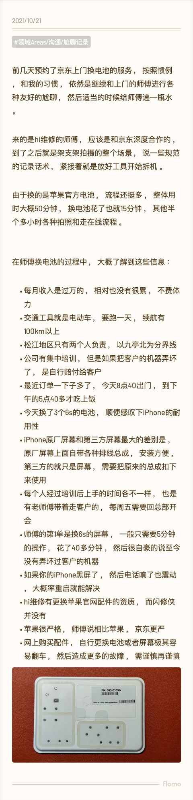
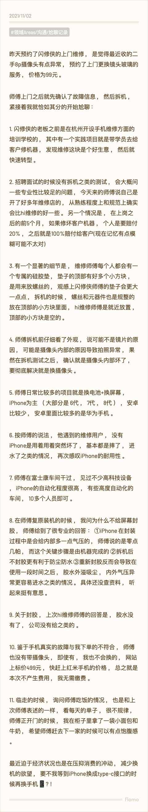

尬聊实录：与 2 个维修平台的上门维修师傅的闲聊总结
约斯特普通
2024-10-09
突然发现最近这两年和他人面对面的闲聊越来越少。
在翻看 flomo 的过程中发现 3 年前记录的和两个平台上的两位上门手机维修师傅的闲聊记录，很适合梳理成一篇文章。
于我而言也是一个小小的职业观察总结，也 希望能给到大家一些参考。
本次提到的两个维修平台分别是：hi维修和闪修侠，均能提供上门维修的服务，均可通过官网、App、小程序下单。
刚刚又预览两个平台的官网及小程序，发现相比三年前又有了一些新变化：
1️⃣ 维修价格又上浮但依然是透明公开及可接受的范围
2️⃣ 闪修侠有Apple 官方配件可选，但并没有宣传，需进入到详细选项查看

3️⃣ 回收服务与售卖二手机的业务增长明显，尝试用当前手机报价，感知上偏低还是自己闲鱼卖更划算
4️⃣ 品类扩充明显，能维修的产品越来越多
重新回顾与两位师傅的聊天内容之后，把相同点与不同点做了总结，相同点多，不同的地方少，而且都在很细节的地方。
相同点：
1️⃣ 都说 iPhone 很耐用，日常要给不少老款机器换电池
2️⃣ 都提及到吃饭时间不固定
3️⃣ 维修的时候都会铺设专用垫子+有一台手机拍摄
4️⃣ 维修过程中如损坏客户机器需要赔付
5️⃣ 都有岗前培训
不同点：
1️⃣ hi维修有 Apple官方 授权，能提供 Apple 的正品部件且可用于宣传
2️⃣ 关于拆开复原后的手机是否需要封胶，闪修侠的师傅回答的似乎更具体更符合逻辑
3️⃣ 虽然 损坏客户机器都需要赔付，但两家的在前 5 个月里面师傅要承担的赔付比例不同（闪修侠 20%，hi维修 100%）
最大的感慨：
这个工作还挺适合动手能力强的中年人的，虽然和外卖一样也需要骑电动车，但强度会低很多且收入也高一些。
以下为当时记录的内容：

